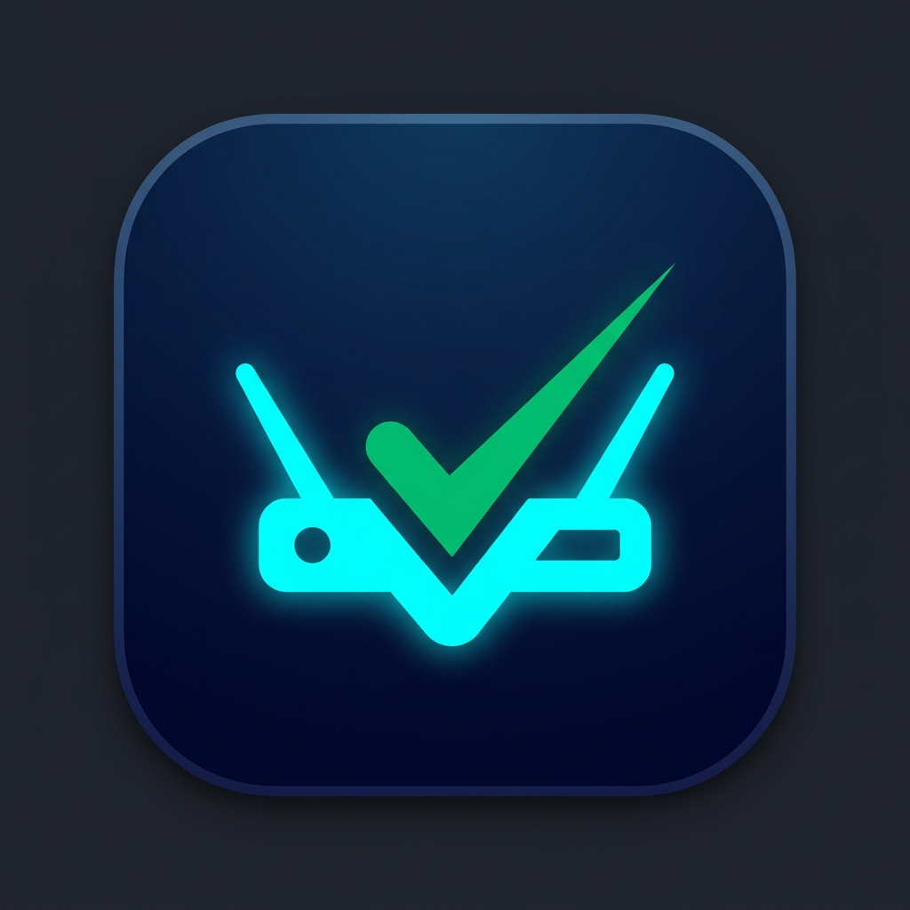

AutoCheck
business
고객사 없음
/
정기점검 없음
expand_more
notifications
dark_mode
준비
folder_managed
워크스페이스
dns
장비 목록
checklist
명령어 카탈로그
실행
router
세션 터미널
radar
실시간 감시
description
점검 로그
결과
troubleshoot
원본로그분석
visibility_off
마스킹
dashboard
대시보드
summarize
보고서
기타
menu_book
지식베이스
settings
환경 설정
receipt_long
전체 로그
chevron_left
접기
프로젝트: -
연결: -
v-